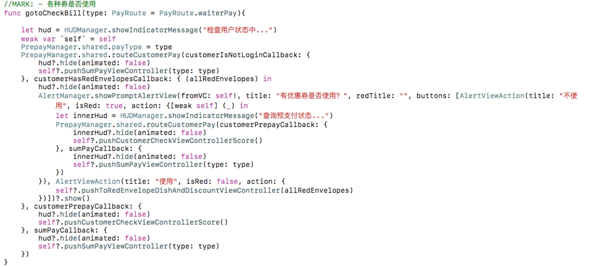
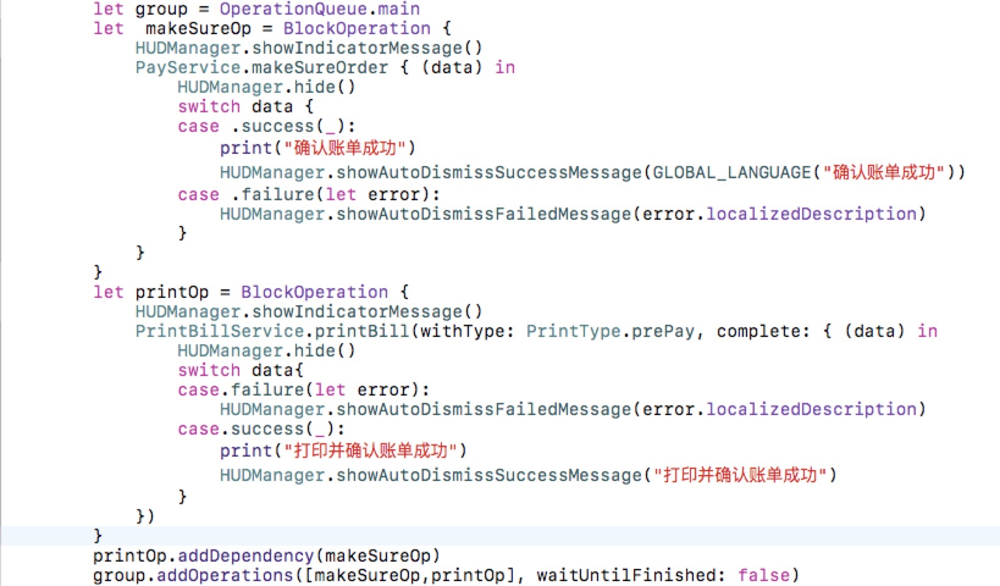
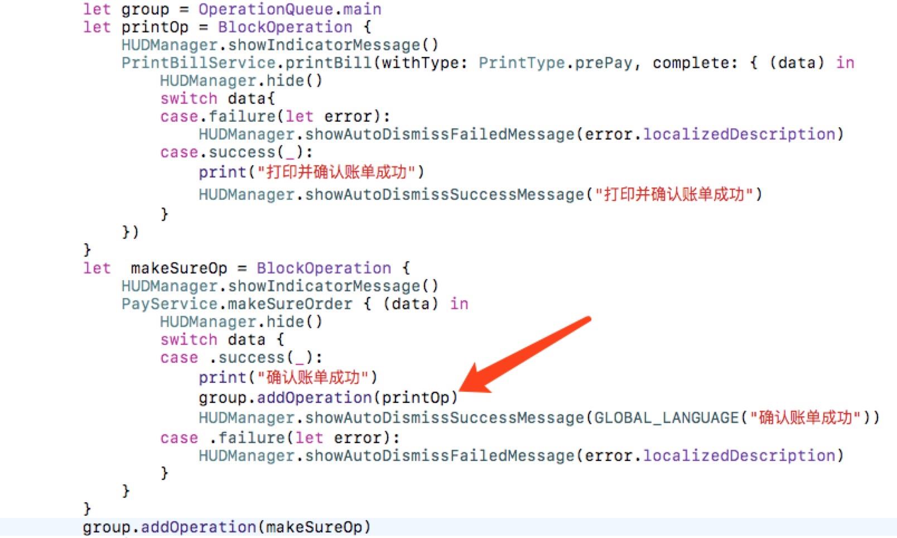

Swift中对于有先后顺序的网络请求的优化
在实际开发中会有很多场景是需要发送多个网络请求的,并且它们之间有逻辑关系,比如餐厅APP中,用户需要先确认账单才能打印账单,并且是确认账单成功了才能打印账单,对于这种问题有几种解决方法:
1让后端的大哥改下
也就是说你可以找你的后端让他帮你在确认账单接口调用的时候调用下打印账单的方法,说实话以前我真的喜欢这么干,但是后来我发现我错了,因为这样做两个业务就耦合在一起了,如果以后还有人要调用这个接口,他绝对想不到这个接口还会触发打印.所以这不是一个好办法.
2嵌套调用

这是我最开始写的代码,我在调用确认账单,并且返回成功了之后,又调用了打印账单.这样做看似是可以了,但是不够好,因为这才两个请求,如果有四五请求有这种业务上的需求,嵌套在一起就回显得很乱,比如:

相信在你看到这种网络请求的时候各种各样的回调的时候,你是绝望的.它很不清晰,把闭包的缺点表现的淋漓尽致.所以这个方法也不好,但它是可用的.
3依赖队列

这是我使用队列最初的想法,首先这两个网络请求是串行的,我的想法是用依赖,printOp依赖于makeSureOp,也就是说只有当确认账单的请求执行完了之后,才会调用打印的接口.事物总是看似美好,其实并没有这么简单.这中队列是不行的,原因有两点,第一点,第一个任务无论最后是成功还是失败,都会调用打印任务,这样是不符合业务.第二点因为网络请求是异步的,所以这个依赖的添加是无效的,第一个任务的网络请求还没有返回,第二个就已经开始了,这个位置我也不是特别理解,为什么依赖是能在同一线程中起作用.
优化队列

这是我优化之后的方法.首先向队列中添加一个确认账单的任务,在成功之后再向队列中添加打印任务.这样做之后,业务实现了,代码也清晰了,就有4 5个有顺序的请求,也很清晰,只需要在成功的地方向队列中添加任务就可以了.
总结:
在实际开发中,这种需求有别于批量下载图片的需求,因为批量下载图片任务之间并没有业务关系,你完全可以建一个GCD的组,每一次下载图片的时候都向组里添加任务,当组中的任务都完成的之后,就是所有图片都下载完了,就算下载不成功,对后续的任务也不会有影响.但是它解决不了接口和接口直接有业务关系的问题,因为下载图片,每个任务都是独立的,异步的,但是这个问题,所有的请求其实是串行的,同步的,有关系的.所以我采用的这种方法来实现,具体怎么样,还需要实践.